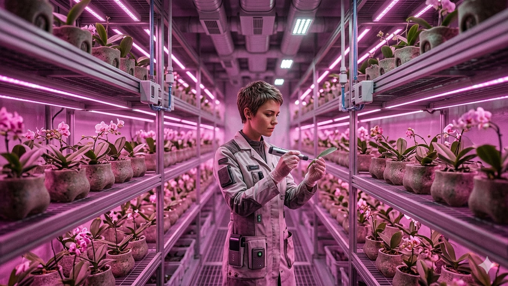
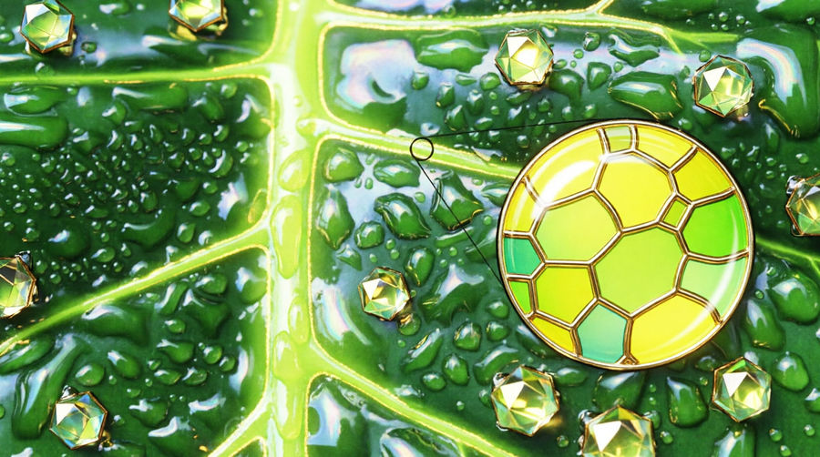

Свет с точки зрения науки представляет собой электромагнитное излучение от горячего вещества или находящегося в ином возбуждённом состоянии вещества. Одним из основных показателей, по которым мы характеризуем свет, служит его цвет. Те цвета, которые мы различаем при помощи своего зрения, по длине волны варьируются от фиолетового (380 нм) до красного (780 нм). Также существует невидимый человеком свет. Это ультрафиолетовое (от 1 до 380 нм) и инфракрасное излучение (длиннее 780 нм).

Свет и вегетация орхидей
В биологическом отношении свет можно назвать главным «топливом» или «пищей» любого растения на земле, в том числе и орхидеи. Солнечный свет воспринимает та часть орхидеи, которая находится над почвой (листья, стебель, псевдобульбы и т.д.). С помощью находящегося в листьях зелёного пигмента хлорофилла растение преобразовывает свет в энергию. За счёт этой энергии растение существует, в том числе образует глюкозу и прочие органические вещества. Этот процесс называется фотосинтезом.
Пигмент хлорофилла состоит из двух частей: сине-зелёный хлорофилл А и жёлто-зелёный хлорофилл B. Хлорофилл А преобразует солнечную энергию в усвояемую растением форму. Он активнее всего работает под воздействием коротких синих (410-430 нм) и длинных красных световых волн (около 662 нм). Хлорофилл B только собирает солнечный свет и действует при коротких синих (453 нм) и длинных красных (642 нм) световых волнах. Во время освещения светом другого цветового спектра активность хлорофилла практически равна нулю. Солнечный свет содержит все длины волн, но растение (в том числе и орхидея) выбирает из них только те, что нужны ему.

Фотосинтез может происходить только в условиях адекватной освещённости. Оптимальный показатель освещённости для орхидей меняется от вида к виду и колеблется в пределах от 10 000 до 30 000 люкс. Те виды орхидей, которые в естественной среде растут на открытой местности (Aerides, Brassavola, Cattleya), нуждаются в 30 000 люксах обычного дневного света. Орхидеи, растущие в полутени (Masdevallia, Dracula и т.д.) потребляют около 15 000 люкс.
Освещение орхидеи
Недостаточное освещение орхидеи приводит к тому, что растение синтезирует меньшее количество глюкозы, которое недостаточно для нормального роста и развития растения. Интенсивность освещения и продолжительность светового дня вносят наибольший вклад в гармоничное развитие орхидеи и её способность регулярно цвести.
В естественной среде обитания орхидей в тропиках средняя продолжительность светового дня составляет около 12 часов круглый год. В условиях лета севера Европы солнечный световой день длится около 16 часов, а зимой — около 6 часов. Интенсивность освещения зависит не только от времени года, но и от расположения окон в квартире, расстояния от окна до растений, количества деревьев, высоты этажа и плотности застройки. В наших широтах интенсивность освещения даже на улице зимой обычно не превышает 5000 люкс (в помещении значительно меньше). Это в разы темнее стандартных условий, к которым за время эволюции «привыкли» орхидеи.
Располагать орхидеи в квартире желательно в соответствии с их видовыми предпочтениями. Если вид орхидеи в природе растёт на открытой местности, её лучше ставить на южные, юго-западные, юго-восточные или, на худой конец, западные окна. Если в природе ваш вид орхидей произрастает в полутени, то и дома её лучше поставить на восточное или светлое северное окно.
| Местоположение | Южное окно в полдень | Северное окно в полдень |
| Улица (прямое солнце) | 76 000 люкс | 6 400 люкс |
| Окно (подоконник) | 53 000 люкс | 2 200 люкс |
| Удалённость 1 метр от окна | 500 люкс | 400 люкс |
| Удалённость 2 метра от окна | 240 люкс | 210 люкс |
| Фитолампа 10 Вт, на расстоянии 0,5 м | 3 770 люкс | |
В целом с точки зрения освещения для орхидей предпочтительнее окна, выходящие на восток и запад. Они дают неплохое освещение зимой и не слишком яркое летом. Чрезмерно яркий солнечный свет может навредить листьям растения. Поэтому в солнечные и жаркие летние дни в послеобеденное время лучше убирать с окна или по крайней мере делать свет рассеянным.
На южных окнах лучше ставить те виды орхидей, которые легко переносят яркий солнечный свет в 50 000 и более люкс (например, вид Cattleya). Чрезмерно яркий свет может не только обжечь листовой покров растения. Он приводит к перегреванию цветка. При постоянном перегреве даже хорошо политое растение начинает чахнуть, листья вянут и становятся дряблыми.
Если все окна вашей квартиры выходят только на север, или перед ними растут деревья и свет загораживают близлежащие строения, вам скорее всего потребуется установить для орхидеи дополнительное освещение.
Лампы для орхидей
Для того, чтобы более детально разобраться, какая же лампа подходит для выращивания орхидей, нужно обратиться к их основным характеристикам. Наши глаза устроены таким образом, что, чем ярче светит лампа, тем больше нам кажется, что она будет идеальным источником света для наших зелёных любимцев. Это не так. Основной параметр, по которому правильно выбирать лампы для выращивания орхидей — их цветовой спектр.
Как было отмечено выше, в фотосинтезе участвуют короткие синие и длинные красные световые волны, соответственно, при выборе лампы для орхидей в первую очередь нужно учитывать, чтобы наша лампа излучала волны данного спектра. Синий свет очень важен для роста орхидеи, а красный стимулирует её цветение.
Лампы "чёрного" света
Эти лампы излучают длинные световые волны размером от 300 до 400 нм, почти не дают видимого для глаз человека света и имеют синий оттенок. Являются для любых растений самым худшим вариантом освещения. Растения для своей жизнедеятельности используют свет с длиной волны от 430 нм.
Энергосберегающие лампы нового поколения
Специализированные лампы, ориентированные на выращивание растений. По данным производителей лампы преобразуют до 80 % энергии в свет и только 20 % в тепло.
Натриевые газоразрядные лампы
До недавнего времени они были одним из самых лучших вариантов для выращивания орхидей, хотя и обладают значительным недостатком — до 60% энергии переводят в тепло. Минимальное расстояние от лампы до растения не должно превышать 30 см.
Светодиодные лампы для орхидеи
В отличие от натриевых газоразрядных ламп до 75 % экономят электроэнергию. Светодиодные фитолампы имеют наиболее высокий КПД среди фитоламп. Они мало греются и не обжигают растение. Их спектр на протяжении всего срока службы соответствует потребностям растений.